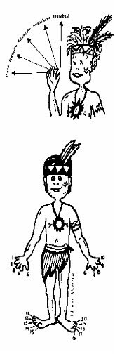

Cultura

isaka uno 1
manamo dos 2
dijanamo tres 3
orobakaya cuatro 4
majabasi cinco 5
El primer artificio ocurre en la construcción del 6,7,8,9, al identificar al conjunto de cinco dedos con la mano (mojo) y usar la suma con el 1 para construir estos números.
mojo matana isaka 6
uno de la otra mano 5 + 1 = 6
mojo matana manamo 7
dos de la otra mano 5 + 2= 7
mojo matana dijanamo 8
tres de la otra mano 5 + 3 = 8
mojo matana orobakaya 9
cuatro de la otra mano 5 + 4 = 9
El segundo artificio ocurre con la construcción del número 10. En lugar de construirse por una secuencia similar a la de los números 6,7,8,9, se construye en la forma siguiente:
mojo reku diez 10
manos iguales 5 + 5 = 10
mojo reku arai isaka 11
mojo reku arai manamo 12
mojo reku arai dijanamo 13
mojo reku arai orobakaya 14
mojo reku arai mojabasi 15
mojo reku arai mojabasi arai isaka 16
mojo reku arai mojabasi arai manamo 17
mojo reku arai mojabasi arai dijanamo 18
mojo reku arai mojabasi arai orobakaya 19
warao isaka 20
warao isaka arai isaka 21
warao isaka arai manamo 22
warao isaka arai dijanamo 23
................................................... ..
warao isaka arai mojo reku 30
warao manamo 40
warao manamo arai mojo reku 50
warao dijanamo 60
warao dijaramo arai mojo reku 70
warao orobakaya 80
warao orobakaya arai mojo reku 90